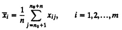

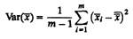
| Previous | Table of Contents | Next |
This formula is valid only if the observations are independent. Unfortunately, the observations in most simulations are not independent. For example, in a queueing simulation, if the waiting time for the ith job is large, the waiting time for the (i + 1)th job would be large too and vice versa. In this case, the successive waiting times are highly correlated, and the preceding formula cannot be used to estimate the variance of the mean waiting time. For correlated observations, the variance of the mean may be several times larger than that obtained from the formula. In one extreme case, the actual variance was 300 times that obtained computed using the formula. Ignoring this fact may result in narrow confidence intervals and premature termination of simulation.
Statisticians have developed a number of methods to correctly compute the variance of the mean of correlated observations. Three such methods are as follows:
Of these, the first two methods are similar to those described earlier under transient removal.
Recall from Section 25.3 that replications are obtained by repeating the simulation with a different seed value. This method is based on the assumption that the means of independent replications are independent even though observations in a single replication are correlated.
The method consists of conducting m replications of size n + n0 each, where n0 is the length of transient phase. The first n0 observations of each replication are discarded. The remaining steps are as follows:
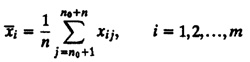
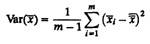
The confidence interval for the mean response is*
*Throughout this section, use t[1-∞/2;m-1] in place of z1-∞/2 if m is less than 30 as explained in section 13.2
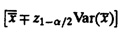
Notice that this method requires discarding mn0 initial observations. Further, the confidence interval width is inversely proportional to 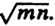. Thus, a narrower confidence interval can be obtained equally well by increasing either m or n. However, to reduce the waste (mn0 initial observations), it is suggested that m be kept fairly small, for example, 10. The length of replications n should be increased to obtain the desired confidence.
The method of batch means, also called method of subsamples, consists of running a long simulation run, discarding the initial transient interval, and dividing the remaining observations run into several batches or subsamples.
Given a long run of N + n0 observations, where n0 is the number of observations that belong to the transient interval and are discarded, the remaining N observations are divided into m = [N/n] batches of n observations each. Start with a small value of n, for example, n = 1, and proceed as follows:
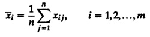
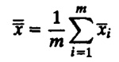
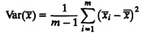
The confidence interval for the mean response is
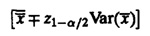
Notice that the computation is essentially the same as it is in the method of independent replications. However, the method of batch means incurs less waste. Only n0 observations are discarded. The confidence interval width is again inversely proportional to 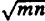, and it can be reduced by increasing either the number of batches m or the batch size n. The batch size n must be large so that the batch means have little correlation. One way to find correct n is to compute the covariance of successive batch means:
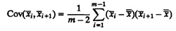
This quantity is also called the autocovariance. The prefix auto denotes that the fact that both random variables 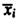 and 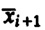 are members of the same set.
The preceding analysis is repeated with increasing values of batch size n until the autocovariance of the batch means is small compared to their variance.
| TABLE 25.1 Autocovarlance and Variance for Various Batch Sizes | ||
|---|---|---|
| Batch Size | Autocovariance | Variance |
| 1 | -0.18792 | 1.79989 |
| 2 | 0.02643 | 0.81173 |
| 4 | 0.11024 | 0.42003 |
| 8 | 0.08979 | 0.26437 |
| 16 | 0.04001 | 0.17650 |
| 32 | 0.01108 | 0.10833 |
| 64 | 0.00010 | 0.06066 |
| 128 | -0.00378 | 0.02992 |
| 256 | 0.00027 | 0.01133 |
| 512 | 0.00069 | 0.00503 |
| 1024 | 0.00078 | 0.00202 |
One alternative is to start with a small n, for instance, n = 1, and successively double n.
| Previous | Table of Contents | Next |